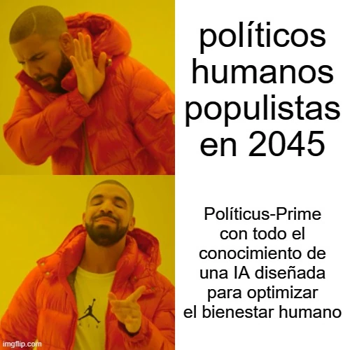

estrategIA #41 ·
Conocer a Políticus-Prime
El contexto
Políticus-Prime es una IA ficticia del primer relato veraniego de estrategIA, situado en 2045. La historia imagina elecciones donde los políticos humanos compiten con máquinas. Drake elige a la IA diseñada para mejorar el bienestar frente a los candidatos humanos que identifica como populistas.
Publicado en: estrategIA #41: historias para el verano, Política en la era de la IA (1): El desafío de Politicus-Prime
Leer el texto de la imagen
políticos humanos populistas en 2045 Políticus-Prime con todo el conocimiento de una IA diseñada para optimizar el bienestar humano
Marca de la herramienta visible en el original: imgflip.com.